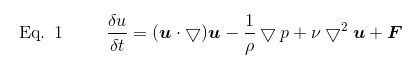
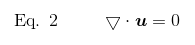
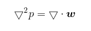
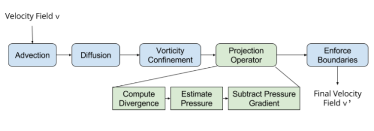

<div class="mdl-layout mdl-js-layout mdl-layout--fixed-header">
  {% include header.html %}

  <main class="mdl-layout__content">
    <div class="cs184">

    <h1 class="cs184" align="middle">FlickFlow</h1>
    <h2 class="cs184" align="middle">Interactive Fluid Dynamics Simulation</h2>
    <h4 class="cs184" align="middle">CS184 Spring 2016 Final Project | Austin Le, Kevin Chen</h1>

    <br><br>

    <h2 class="cs184">Abstract</h2>

    <p>FlickFlow is an interactive fluid dynamics simulation that estimates the behavior of an incompressible, homogeneous fluid under the <a href="https://en.wikipedia.org/wiki/Navier%E2%80%93Stokes_equations" class="link" target="_blank">Navier-Stokes equations</a>. The application uses GLSL fragment shaders to perform the physics calculations on the GPU. Interactivity via <a href="https://www.leapmotion.com/" class="link" target="_blank">Leap Motion</a> hardware allows users to run their fingers through virtual ink fields.</p>

    <p>This project is publicly hosted on <a href="https://github.com/kvchen/flickflow/" class="link" target="_blank">GitHub</a>.</p>

    <h2 class="cs184">Implementation</h2>

    <h3 class="cs184">Navier-Stokes Equations</h3>
    <p>In FlickFlow, we assume fluids are incompressible and homogeneous, so that we can apply the Navier-Stokes equations to model fluid dynamics.</p>
    <div align="middle"></div>
    <div align="middle"></div>
    <p>Here, <b>u</b> represents the velocity vector field, ρ is the density, p is the pressure field, ν is the viscosity, and <b>F</b> represents any additional forces.</p>
    <p>In Eq. 1, the first term represents the advection of the fluid’s velocity (how it carries itself). The second term represents the acceleration of the fluid due to pressure from interacting with other fluid molecules. The third term represents motion due to diffusion; fluids that are thicker than others are more resistive to flow, and it is this resistance that results in diffusion of the fluid’s velocity. Altogether, Eq. 1 represents the fluid’s conservation of momentum.</p>
    <p>Similarly, Eq. 2 represents the fluid’s conservation of mass; this equation also implies that the velocity field of the fluid is divergence free.</p>

    <h3 class="cs184">Solving the Navier-Stokes Equations</h3>
    <p>Since our simulation is discrete, we can solve the Navier-Stokes equations using numerical integration. Common examples of numerical integration are forward Euler method (explicit) and backward Euler method (implicit). Here, we use implicit Euler method to approximate the advection component of the equations, since the explicit Euler method is unstable for large timesteps, which could cause the simulation to “blow up”.</p>
    <p>To approximate the pressure component, we apply the Helmholtz-Hodge decomposition to get</p>
    <div align="middle"></div>
    <p>which is a commonly called the Poisson-pressure equation. To solve the Laplacian, we use Jacobi iteration to approximate the pressure field, p. We start with an approximation for the value (in our case, zero) and then continuously iterate to get closer and closer to the actual value. Since the technique takes a while to converge, we perform between 20 and 80 Jacobi iterations. Increasing the number of iterations introduces lag into the simulation, so we had to determine a tradeoff between speed and simulation accuracy.</p>
    <p>Since the diffusion component of the equation also involves a Laplacian operator, we can utilize the same Jacobi iteration method to solve for it.</p>

    <h3 class="cs184">Applying the Navier-Stokes Equations</h3>
    <p>To apply the above components, we write GLSL shaders that texture the displayed grid. In addition to these components, we also decided to implement the “additional forces” component. For this, we implemented vorticity confinement, which preserves local rotations or perturbations in the fluid in the simulation that would otherwise be lost. The result is that we get a more realistic fluid, especially those with low viscosity and would normally display this type of fine-scale rotational flow.</p>
    <p>Each of these GLSL shaders are responsible for some unique component of the fluid dynamics simulation described above. For example, we have an <tt>advect.frag</tt> shader that is advects the inputted vector field (usually the velocity field or density field, in our case) using implicit Euler method. A more complicated example might be our <tt>vorticity.frag</tt> and <tt>vorticityForce.frag</tt> shaders which perform a series of computations based on neighboring fragment values to then produce a new velocity vector field that reflects vorticity.</p>
    <p>All together, FlickFlow uses a variety of fragment shaders, which are applied to each fragment (cell) in the 2D grid that represents the boundaries of the fluid simulation. In each step of the simulation, we load a GLSL program (shader program), pass in relevant parameters such as viscosity and dissipation rates, and run it. In turn, all of the fragments (e.g. cell or pixel in the simulation) locally update their textures according to that specific shader program. At a high level, each step of the simulation applies a series of shaders to the entire simulation according to the following flowchart:</p>
    <div align="middle"></div>
    <p>We also maintain an "ink" vector field in addition to the velocity field, which contains the dye splatted into the interactive simulation. To make features such as vorticity (local perturbations in the fluid) more pronounced in the resulting “ink”, we decided to make a distinction between how we perform a splat to the “ink” (density vector field) and the splatted velocity vector field.</p>
    <p>For a density vector field, we apply a Gaussian splat. For a velocity vector field, we use a different, more simplified splat. A Gaussian splat performs a linear interpolation between the existing color (value of the density field) at some fragment and the color applied by the splat in order to determine the resulting color of the fragment. On the other hand, a simple splat colors the fragment based on the user’s finger’s velocity if it is within some distance to the user’s finger’s position. Otherwise, the fragment retains its color. As a result, properties such as vorticity become more pronounced and easily noticeable in the fluid.</p>
    <p>In summary, in each iteration of the simulation loop, each fragment locally updates its textures according to the shader programs, each of which represent a distinct component of the Navier-Stokes equations. Fortunately, this is something easily parallelizable and can be done in a SIMD fashion on the GPU while maintaining interactive frame rates.</p>

    <h3 class="cs184">Making FlickFlow Interactive</h3>
    <p>In addition to implementing the fluid dynamics described in our references, we wanted to make the simulation interactive, so we integrated a Leap Motion controller.</p>
    <p>We augment our simulation loop by checking for Leap Motion finger input at the end of each iteration of the loop. For each finger detected, we extract the finger’s position and velocity vector, map them into the screen space, and then apply a splat of a fluid at the finger’s location. This, in turn, simulates the effect of virtually putting your finger into a fluid and having your finger leave a trail of dye or ink of its own.</p>
    <p>The splatting effect is itself just another fragment shader; to “inject” ink into the existing fluid, we apply the splat shader program to the density and velocity fields in the simulation.</p>
    <p>To make the interactive splatting more aesthetically appealing and fun to play with, we also implemented smooth color cycling over time using offset sine waves.</p>

    <h3 class="cs184">Problems</h3>
    <h4 class="cs184">Boundary Conditions</h4>
    <p>At the boundaries of the box, fluids should demonstrate two properties: no-slip (zero velocity) and pure Neumann (rate of change of normal pressure vector is zero).</p>
    <p>To enforce these properties, we added a boundary condition shader to the simulation pipeline. If a fragment is at the boundary, its velocity field is set to 0 and its pressure vector is set to be equal to that of an adjacent fragment (which makes the rate of change zero).</p>
    <p>Before implementing any boundary checks, interacting with the edges of the box produced not only a splat there, but also caused the entire box to behave abnormally and rapidly overflow with the splat.</p>

    <h2 class="cs184">Results</h2>
    <div align="middle"></div>
    <figcaption align="middle">A single finger or mouse interaction. Notice how the fluid behaves after being "splatted" by the user.</figcaption>
    <br><br>
    <div align="middle"></div>
    <figcaption align="middle">More fingers! Notice how the colors mix and interact with each other.</figcaption>
    <br><br>
    <div align="middle"></div>
    <figcaption align="middle">Two fingers. This time, we cycle through showing different vector field components: density, velocity, pressure, divergence, and vorticity.</figcaption>

    <h2 class="cs184">References</h2>

    <ul>
      <li><a href="http://www.dgp.toronto.edu/people/stam/reality/Research/pdf/ns.pdf" class="link" target="_blank">Stable Fluids - Jos Stam</a></li>
      <li><a href="http://http.developer.nvidia.com/GPUGems/gpugems_ch38.html" class="link" target="_blank">NVIDIA Developer Zone: GPU Gems: Fast Fluid Dynamics Simulation on the GPU</a></li>
      <li><a href="http://cg.iit.bme.hu/visualization/gridfluid/downloads/gridfluid-sva-0.1.pdf" class="link" target="_blank">Gridfluid — 3D Grid Based Fluid Simulator for Hewlett-Packard Scalable Visualization Array (Febr, 2008)</a></li>
      <li><a href="http://www.csc.kth.se/~mathar/fluids-2d/" class="link" target="_blank">Fluids-2D</a></li>
    </ul>

    <h2 class="cs184">Reflections</h2>
    <p>We learned...</p>
    <p>... how to write more complicated GLSL shaders (compared to assignment 2).</p>
    <p>... how the entire OpenGL pipeline works, since we wrote mostly from scratch.</p>
    <p>... how to generate pretty rainbow color patterns using sine waves.</p>
    <p>... to appreciate the complex physics behind fluids in the real world.</p>
    <p>... fluids are complex but make for cool visualizations!</p>


    <h2 class="cs184">Looking Forward</h2>
    <p>There are many ways we could continue to extend this project further, some of which include the following.</p>
    <ul>
      <li>Try this on a discrete graphics card and observe performance improvement.</li>
      <li>Include generalized diffusion component of Navier-Stokes equation (viscosity of fluid).</li>
      <li>Try it with other fluids by playing with parameters of the vector fields and adding additional forces. Examples might be denser liquids, clouds, gases such as smoke, etc.</li>
      <li>Make it 3D!</li>
      <li>Recreate or export it into virtual or augmented reality.</li>
    </ul>

    <h2 class="cs184">Contributions</h2>

    <h3 class="cs184">Kevin Chen</h3>
    <p>Created OpenGL project framework, which primarily consists setting up the simulation pipeline and necessary data structures and files. In addition, implemented core fragment and vertex shaders, which include the advection, divergence, gradient, splat, and vorticity fragment shaders. Created basic framework for working with input from the Leap Motion.</p>

    <h3 class="cs184">Austin Le</h3>
    <p>Implemented diffusion fragment shader as well as boundary condition fragment shader to handle edge cases. Implemented mouse interaction with the simulation as a substitute for fingers via Leap Motion. Implemented smooth color cycling through RGB values to create aesthetically pleasing fluids (inks). Created presentation slide deck and final report.</p>

    </div>
  </main>
</div>
